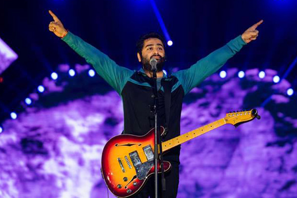
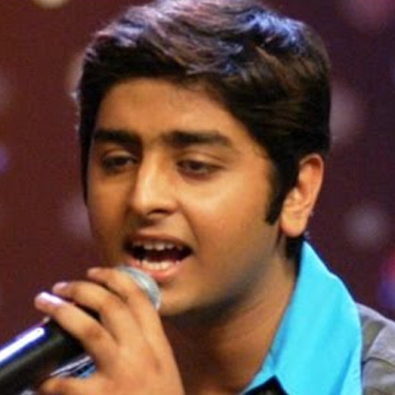
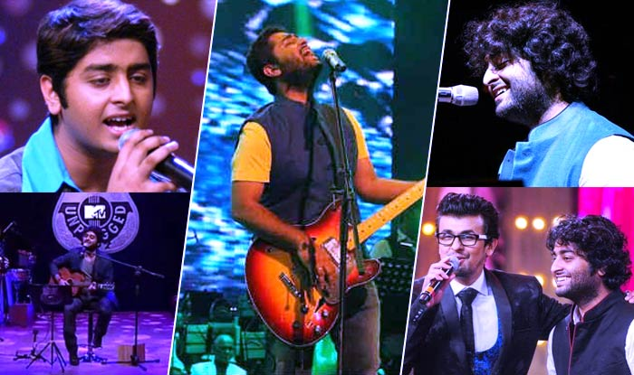
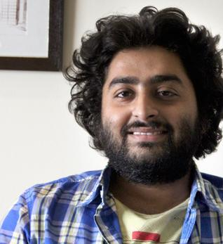
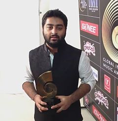

Arijit Singh born on 25 April 1987. He is an Indian playback singer, music producer, recordist and music programmer. He sings predominantly in Hindi and Bengali, but has also performed in different other Indian languages. Singh is regarded as one of the most versatile and successful singers in the history of Indian music and Hindi cinema.
He began his music training at a young age at home. His aunt trained in Indian classical music, and his grandmother used to sing. His uncle played the tabla, and his mother also sang and played the tabla. He studied at Raja Bijay Singh High School and later at the Sripat Singh College, a University of Kalyani affiliate. According to him, he was a decent student, but cared more about music and his parents decided to train him professionally. He was taught Indian classical music by Rajendra Prasad Hazari and trained in tabla by Dhirendra Prasad Hazari. Birendra Prasad Hazari taught him Rabindra Sangeet (songs written and composed by Rabindranath Tagore) and pop music. At the age of three he started training under the Hazari brothers, and at the age of nine, he got a scholarship from the government for training in vocals in Indian classical music.



